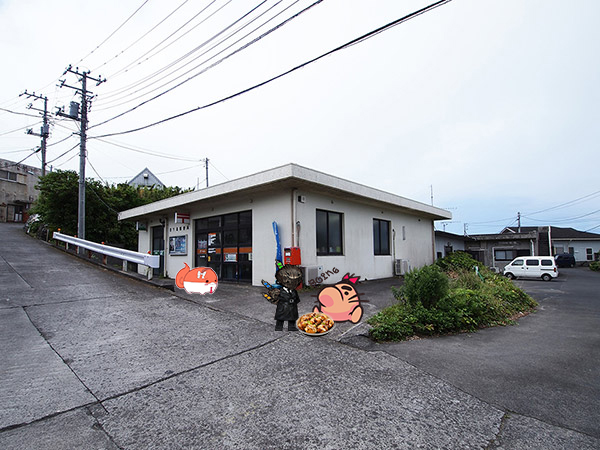

II
Llegamos para encontrarnos con un Edd callado y un Mati preocupado.
"Dejamos a Leros sin supervisión porque fue al baño, mientras tanto nos compramos cosas y parece que ahora se le cerró la puerta y no responde cuando lo llamamos. ¿Estará bien?"
"si compartís los takoyakis os ayudamos a tirar la puerta abajo"
Edd parecía rehusarse pero Mati sin pensarlo mucho nos entregó parte del botín que compraron
La dependienta, a la cual no consultaron antes, escuchó todo y nos miró de reojo asi que tuvimos que usar las llaves del local, por suerte siendo una mejor idea que la de Maris.
Jamás podriamos haber imaginado lo que habria detrás de esa puerta.
La ventana al fondo del baño, que era lo único que repelía el lugar de estar en pura oscuridad por la luz que se filtraba por su pequeña apertura, estaba siendo tapada por el cuerpo de Leros asfixiado por un alambre que lo colgaba a la parte exterior del tejado a través de la ventana.
Todos estabamos en shock, pero Edd y la dependienta pudieron reaccionar primero que todos y llamaron a las autoridades.
Juntos, volvimos a la mansión e informamos por WT a los demás para que vengan.